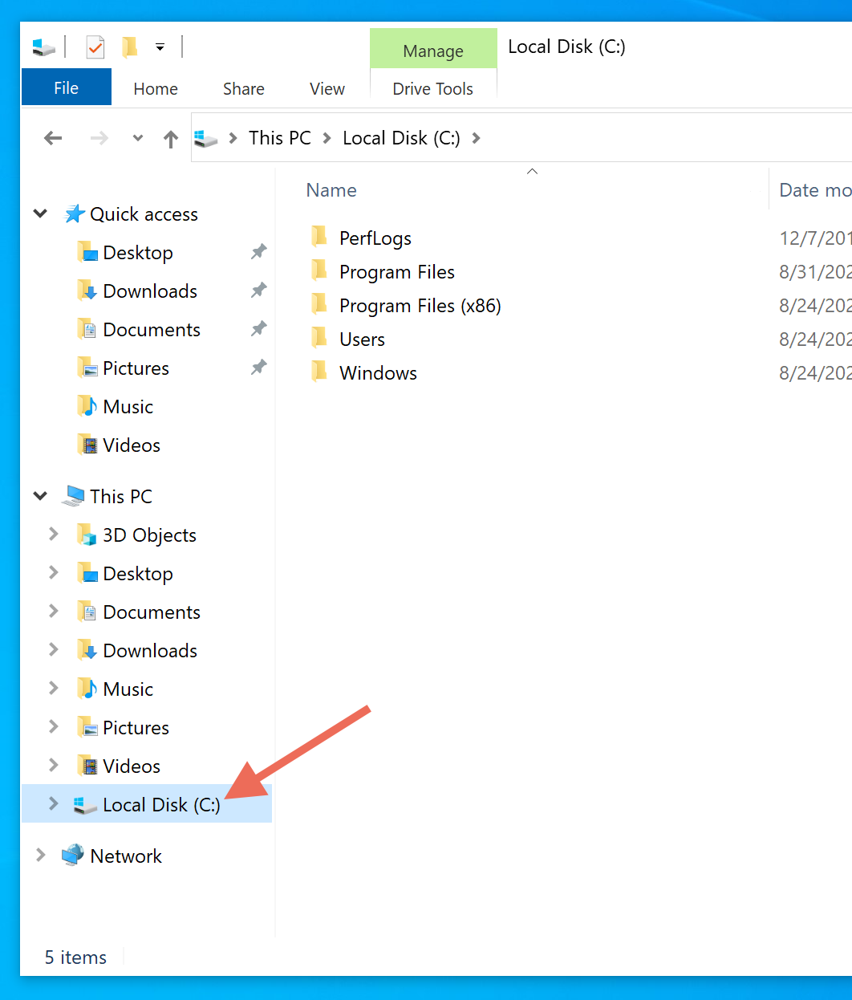
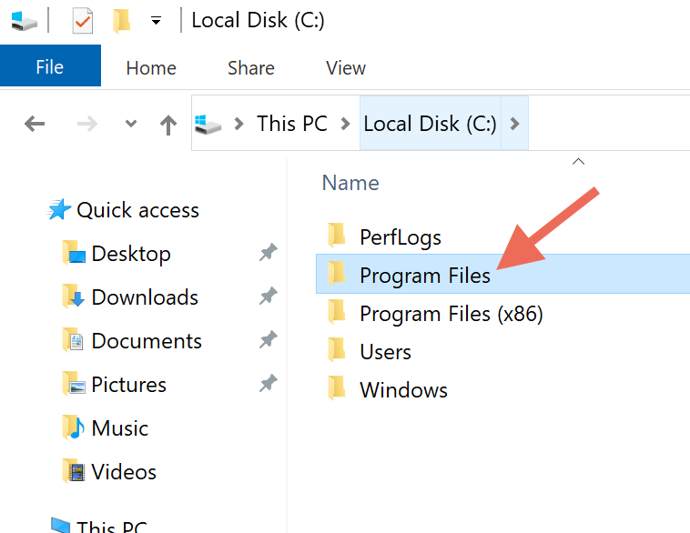
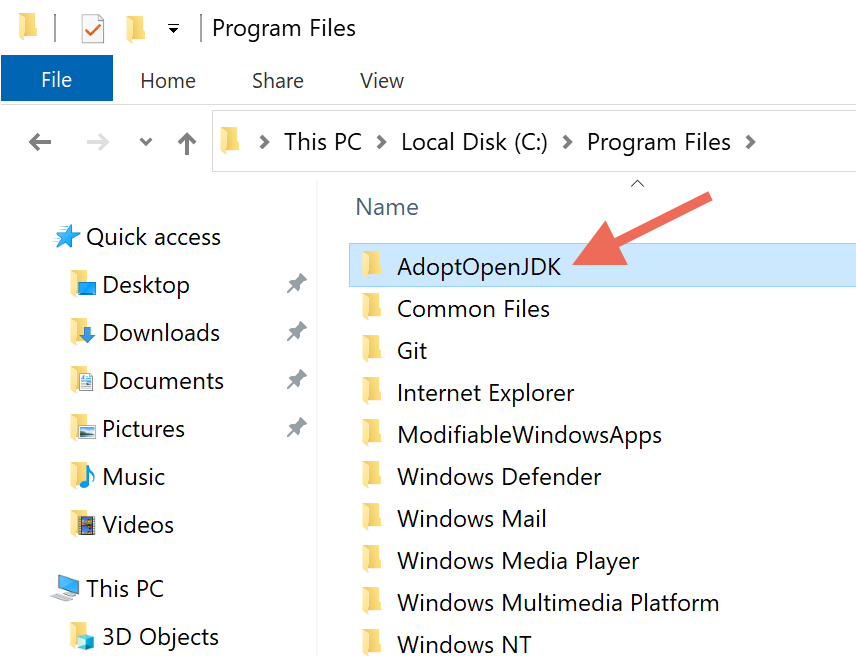
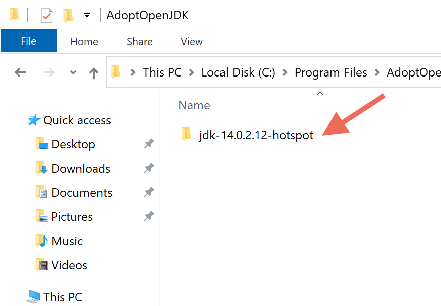
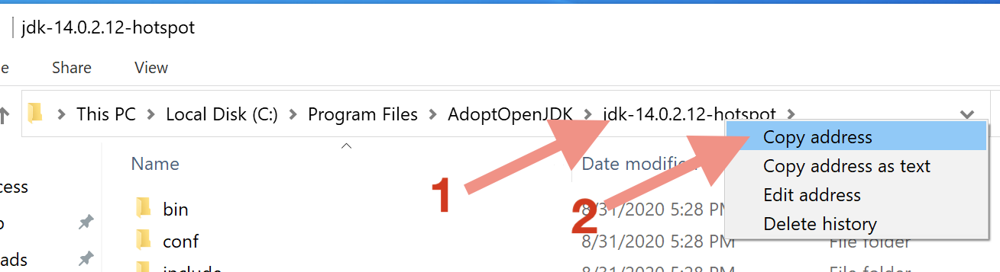
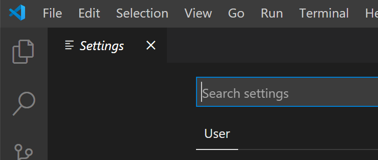
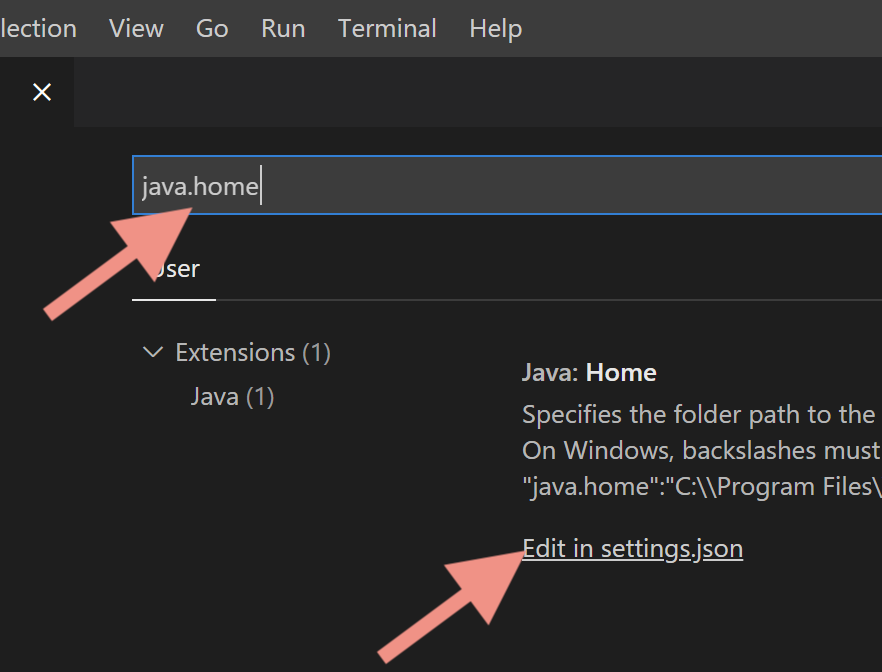
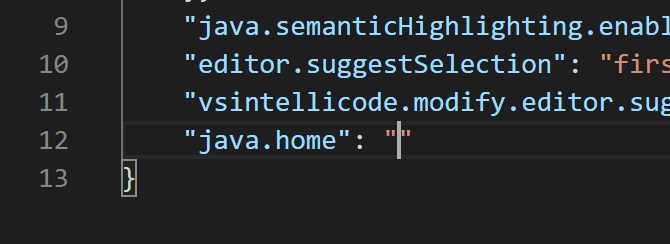
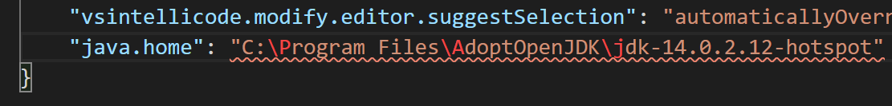
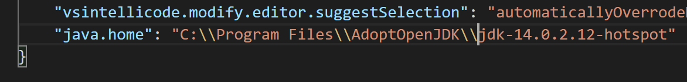

Sometimes (but not always!) the extension that helps VS Code handle Java projects has trouble finding the Java installation on Windows. We aren’t sure why this happens, but the following steps work around it:
Open Windows Explorer. (You can do this quickly by holding down the Windows key and pressing E.)
In the list of locations on the left of the Explorer window, click Local Disk (C:).
Open Program Files:
Open AdoptOpenJDK:
You should see a folder here with a name like jdk-#####-hotspot. The exact name may look different than the screenshot below, but it should start with “jdk.” Open that folder.
The address bar at the top of your explorer window should now say something similar to:
This PC > Local Disk (C:) > Program Files > AdoptOpenJDK > jdk-14.0.2.12-hotspot
Right-click the jdk-####-hotspot item in the address bar, then choose Copy address from the menu: 
Open Visual Studio Code.
Press ctrl-, (i.e., hold down the control key and press the comma key). This should open VS Code’s settings window: 
Type java.home into the “Search settings” field, then click the Edit in settings.json link below:

You should see a java.home”: “” line like the one in this
screenshot, with your cursor right inside the empty quotes:

There might or might not be other lines around it. Ignore all that. All that’s important is that you see that “java.home” line, just like it appear in the screenshot above.
Press ctrl-V to paste the path you copied up above in between the quotes. The result should look very similar to this: 
Note the squiggly underline and the red letters after the backslashes. We need to fix that. Go through what you just pasted and change every backslash into two backslashes. When you are done, the squiggly underline should disappear: 
Press ctrl-S to save your changes to this file.
Press ctrl-W to close settings.json, then press ctrl-W again to close Settings.
Quit VS Code.
Open VS Code again.
Now return to the instructions for running your first Java project and see if this fixed the problem. If it still doesn’t work, ask for help.